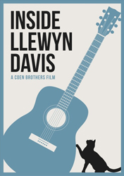
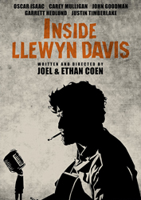
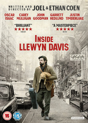
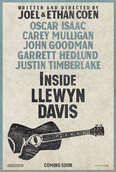
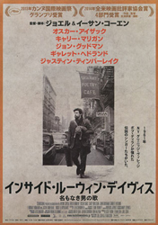

Oscar Isaac
Sylvia Kauders
Carey Mulligan
Stark Sands
Ian Jarvis
Adam Driver
Steve Routman
Robin Bartlett
Alex Karpovsky
Helen Hong
Garrett Hedlund
Frank L. Ridley
Ben Pike
Bruno Delbonnel
The film follows a week in the life of a young folk singer as he navigates the Greenwich Village folk scene of 1961. Guitar in tow, huddled against the unforgiving New York winter, he is struggling to make it as a musician against seemingly insurmountable obstacles - some of them of his own making.
Though Llewyn Davis is a fictional character, the story was partly inspired by folk singer Dave Van Ronk's posthumously published memoir, The Mayor of MacDougal Street (2005). Most of the folk songs performed in the film are sung in full and recorded live. Principal photography took place in early 2012, primarily in New York City.
Well before writing the script, the Coens began with a single idea, of Van Ronk being beaten up outside of Gerde's Folk City in the Village. The filmmakers employed the image in the opening scenes, then periodically returned to the project over the next couple of years to expand the story using a fictional character. After a chance run-in with a cabdriver who lived at their old address, the Coens used the apartment they'd rented several decades earlier.
Joel Coen said, "... the film doesn't really have a plot. That concerned us at one point; that's why we threw the cat in." Shooting was complicated by an early New York spring, which interfered with the bleak winter atmosphere that prevails throughout the film, and by the difficulty of filming several cats, who, unlike dogs, ignore filmmakers' directions. On an animal trainer's advice, the Coens put out a casting call for an orange tabby cat, since they were sufficiently common that several could play one part. Individual cats were then selected for each scene based on what they were disposed to do on their own.




